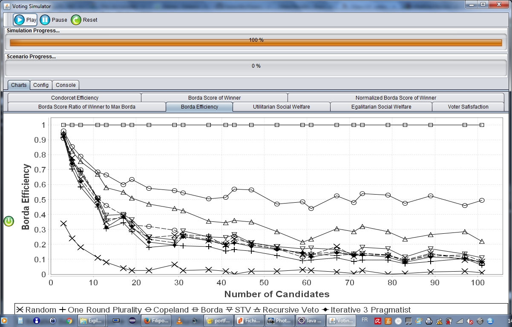
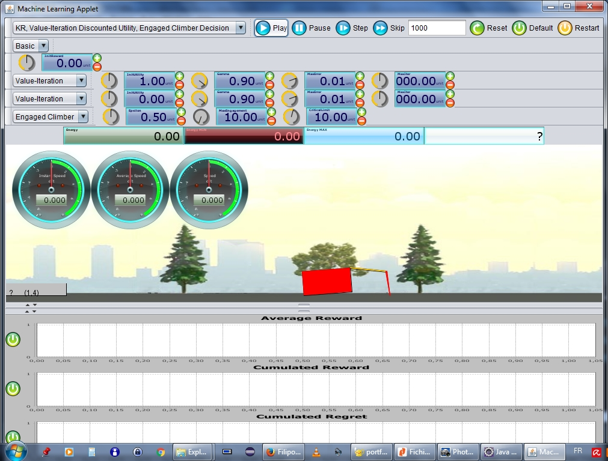
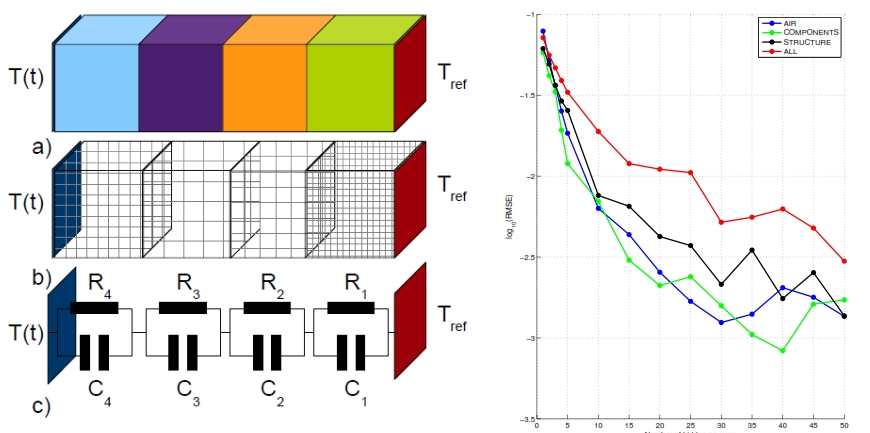

La page web que vous êtes en train de consulter a été entièrement conçue par moi : les contenus, le design graphique, ainsi que les comportements.
Il s'agit d'une page web statique, développée dans le framework HTML 5.0, CSS 3.0, et JavaScript/JQuery.
Le code source de la page est disponible ici :
Entre 2012 et 2014 j'ai travaillé en tant qu'ingénieur de recrche et développement dans l'entreprise EPSILON-ALCEN, à Toulouse, spécialisée dans l'ingénierie thérmique.
Une de mes foncions à l'époque, en colaboration avec d'autres membres de l'équipe informatique, était le developpement du site web dédié de la plateforme de mutualisation FARENHEIT.
Ce portail web a été dévéloppé en PHP à l'aide du système de gestion de contenus Joomla, intégré à des applications JavaEE internes, dont l'accés est restreint au personnel authorisé.
Mes responsabilités étaient le déployement et la gestion des serveurs (Apache/PHP, JBoss, MySQL), le développement des nouveaux modules Joomla en PHP, le développement d'applications web sous JavaEE, et l'intégration au service d'authentification unifié CAS (modules Apache et Java).
En ce qui concerne l’étude des mécanismes sociaux, la théorie du vote fournit un important modèle d’interaction. En intégrant l'équipe LILaC, à partir d'une collaboration avec les collègues du groupe, on a travaillé dans l'itersection entre le choix social et l’apprentissage multi-agent. Dans une situation de choix social, un agent vote stratégiquement : il ne dévoile pas sa vraie préférence, mais il choisi l'action qui lui permettra d'obtenir un résultat collectif plus intéressant par rapport au résultat qu’il aurait obtenu s’il avait voté de façon sincère.
Dans cette recherche, nous avons étudié la capacité d’apprentissage des agents dans une situation de choix collectif. Chaque agent, possédant une fonction de préférence privée concernant les candidats, participe à une élection itérative. À chaque tour, les agents votent et un candidat est déclaré vainqueur selon la règle de majorité simple. La même élection se répète selon un nombre d’itérations prédéfini, et les agents reçoivent de récompenses proportionnelles à la position du candidat vainqueur dans sa propre échelle de préférences. Un mécanisme d’apprentissage par renforcement peut ainsi être utilisé. La stratégie de vote de chaque agent est modifiée par le calcul de l’utilité de ses actions dans les itérations précédentes.
Nous avons réalisé plusieurs expériences, faisant varier le nombre de votants et de candidats, ainsi que la forme de génération des fonctions de préférence individuelles, et nous avons démontré que ces agents, équipés d’un mécanisme d’apprentissage simple, du type multiarmed bandit optimiste en face à l’incertitude, peuvent apprendre à prendre de décisions collectives dans un niveau de qualité similaire à d’autres procédures de vote itératif, comme Best-Response et STV. Ainsi, nous avons pu vérifier que des agents dotés de ce genre de mécanisme sont capables d’apprendre à voter de façon stratégique à partir des interactions passées, et que les résultats de ces élections s’améliorent effectivement à chaque itération selon les mesures standard de qualité de décision, comme Condorcet-Efficiency et Borda-Score.
Dans les scénarios proposés, l’information disponible pour les agents se limite au candidat gagnant à chaque itération, contrairement à d’autres méthodes de vote itératif qui demandent plus d’information, comme le score des candidats. De la même façon, nos agents sont autorisés à changer leur vote simultanément à chaque itération, ce qui n’est pas souvent permis par les méthodes classiques pour de raisons de convergence.
Ce travail a été présenté lors du workshop ALA 2016, et sera présenté et publié lors de la conférence ADT 2017.
Vous pouvez télécharger l'article ici :
Vous pouvez également télécharger le code source du programme Java ici :
Quand un agent doit apprendre la dynamique de son environnement à travers ses interactions, et en même temps optimiser son comportement (pour maximiser l’espoir de futures récompenses), il se voit piégé par le dilemme entre l’exploration et l’exploitation. S’il décide prématurément de suivre la politique d’actions qui lui semble la meilleure (l’exploitation), il risque d’accepter un comportement sous-optimal (un maximum local). Inversement, s’il reste trop longtemps à explorer l’environnement à la recherche de la solution optimale, il perd l’occasion de profiter de ce qu’il a déjà appris.
L’objectif des mécanismes d’apprentissage par renforcement est de trouver une politique d’actions qui maximise les récompenses, et qui présente le moindre regret, c’est-à-dire, que la performance cumulative de l’agent dans le long-terme doit se rapprocher de la performance cumulative d’un agent hypothétique qui agit dès le début selon une politique optimale. Deux types de stratégie pour résoudre ce dilemme existent : (a) réaliser une exploration non-dirigée, en introduisant une certaine quantité d’actions aléatoires dans le comportement de l’agent ; ou (b) suivre le principe de l’optimisme face à l’incertitude.
Les algorithmes liés à la première stratégie (l’exploration non-dirigée), comme ε-greedy, sont faciles à implémenter, mais ils sont inefficaces dans des nombreuses situations d’apprentissage séquentiel. Le deuxième groupe d’algorithmes (optimistes face à l’incertitude), comme UCB et R-Max, présente le défaut de ne pas prendre en compte le coût de l’exploration, pouvant plonger l’agent dans une longue phase d’exploration au début du temps de sa vie.
Dans deux articles récents (2015) je propose une solution pour éviter les périodes d’exploration initiale non-régulée. L'algorithme se base sur l’idée d’utiliser l’information relative à l’état de l’agent, et ainsi de choisir les bons moments pour changer de stratégie, entre l’exploration et l’exploitation. Dans l’algorithme proposé, l’agent est engagé avec un comportement pendant un certain temps, ce qui lui permet de persévérer dans la recherche des récompenses ou des découvertes distantes dans l’espace d’états.
Pour montrer l’intérêt d’une telle solution, nous avons modifié le problème classique d’apprentissage par renforcement dans lequel le but est simplement de trouver la solution optimale en minimisant le regret. Dans notre proposition, les récompenses positives ou négatives reçues par l’agent se cumulent dans une variable qu’on appelle « énergie ». Comme dans le modèle cybernétique, le but de l’agent devient, en plus de trouver une politique qui maximise les récompenses, d’éviter que son énergie retombe à un niveau critique, trop près de zéro.
Les algorithmes d'apprentissage, ainsi que des problèmes tels que le crawling-robot, ont été implémentés en Java sous Eclipse, utilisant l'architecture MVC multithreading, ansi que les bibliotèques Swing pour l'IHM.
Dans ces articles, nous avons comparé les algorithmes classiques avec notre algorithme, en obtenant des résultats intéressants. Nous avons démontré, pour des problèmes standards, que notre méthode est capable de trouver efficacement la politique optimale, tout en évitant de se retrouver sans énergie.
La programmation dynamique est constituée d’un ensemble d’algorithmes capables de calculer efficacement des politiques optimales pour les processus de décision markoviens, fournissant les fondations pour les algorithmes d’apprentissage par renforcement. La majorité de ces algorithmes suppose que la politique optimale est celle qui maximise la somme de récompenses dévaluées. Cependant, ce critère n’est pas approprié à plusieurs systèmes récurrents (où il n’y a pas un état terminal), pour lesquels la récompense moyenne s’accorde mieux.
Dans cette recherche, nous avons développé une méthode de programmation dynamique originale pour le calcul de politiques optimales selon le critère de la moyenne (gain) et de tous les ordres de moyenne ajustée (bias). L’algorithme, appelé Trajectory Policy-Iteration (TPI) est capable de trouver une solution en temps polynomial quand le processus présente des transitions déterministes.
TPI estime la fonction de valeur des processus de décision markoviens (MDPs) en considérant un horizon de temps illimité (potentiellement infini). L’algorithme utilise l’information structurale sous-jacente au processus, de manière à estimer l’utilité des paires état-action à travers l’identification des circuits et des chemins transitoires dans le processus, pouvant ainsi calculer la moyenne des récompenses attendues pour chaque segment. Les différents ordres de la moyenne ajustée ont été traités par une technique intuitive, qui constitue une contribution tant comme interprétation originale du sens de ces divers degrés d’ajustement, que comme méthode nouvelle pour évaluer et trouver telles solutions.
La viabilité de l’algorithme est supportée par des résultats expérimentaux. Un article a été présenté dans le workshop JIAF 2016, et un autre, conséquence de ce même projet, est en préparation.
Entre le mois d’avril 2012 et le mois de septembre 2014, j’ai intégré la société Epsilon Ingénierie SAS (entreprise membre du groupe ALCEN), située à Toulouse, en tant qu’ingénieur de recherche et développement. Dans ce cadre, j’ai eu l’occasion de participer à des recherches concernant les méthodes de simulation et de modélisation automatique appliquées aux problèmes d’ingénierie thermique, en utilisant des méthodes de régression et d’optimisation, des réseaux de neurones artificiels, et des outils de simulation. Cette expérience en entreprise a représenté une riche opportunité pour apprendre à adapter mon savoir-faire, plutôt lié à un univers académique et théorique, dans un environnement industriel, avec les pratiques de la recherche appliquée.
Dans le contexte industriel de l’ingénierie thermique, une problématique importante est l’analyse de points thermiquement vulnérables des produits (pièces d’un satellite, d’un avion, microcomposants électroniques, etc.). Les études de viabilité de ces composants ne se font pas par l’expérimentation réelle, vu que la construction d’un prototype est financièrement impraticable, mais à travers des simulations avec des logiciels spécialisés dans la reproduction du comportement des matériaux (modèle physique d’éléments finis).
Le but de ces simulations thermiques est de trouver les points ou la région la plus sensible du composant, et ensuite la redimensionner automatiquement à fin d’augmenter la fiabilité de la pièce. Cette procédure se poursuit itérativement, jusqu’à ce que des niveaux de fiabilité prédéterminés soient vérifiés (résistance aux températures extrêmes).
Cependant, l’exécution répétée des simulations numériques détaillées prenant en compte tous les éléments finis qui constituent le modèle physique est prohibitive en temps de calcul. Une alternative consiste à utiliser des modèles de substitution à temps de réponse rapide, dont les paramètres sont obtenus à partir d’échantillons de données générées à partir d’une simulation partielle du système physique. Il s’agit de constituer un modèle réduit possédant une forme analytique paramétrée à partir de l’interpolation ou de la régression des échantillons.
Dans ce cadre, j’ai participé au développement d’un outil capable d’extraire un modèle fonctionnel qui représente un composant physique de manière abstraite, et d’indiquer, à chaque itération, les points potentiellement sensibles du modèle, et qui doivent donc être détaillés par une nouvelle simulation physique partielle. Cet outil effectue la construction des modèles réduits à travers des réseaux de neurones artificiels. Le plan d’expériences peut ainsi être enrichi progressivement par l’ajout des points extraits du modèle obtenu avec le réseau de neurones dans la simulation physique.
La procédure est la suivante : (a) des échantillons de données représentant les températures maximales atteintes dans quelques points du composant sont générés par simulation physique ; ensuite (b) les paramètres d’un réseau de neurones du type backpropagation (où les entrées correspondent aux différentes dimensions du composant) sont appris en utilisant ses échantillons, et le réseau de neurones devient un modèle simplifié du comportement thermique du composant ; (c) on calcule le point où la température est maximale ; (d) on rajoute ce point au plan d’expériences, et on génère des données pour ce point dans la simulation physique ; (e) on répète ces pas jusqu’à la convergence.
Ce travail, faisant partie d’un contexte de recherche uniquement industrielle, n’a pas été publié en forme d’article scientifique. Il a produit un outil utilisé dans les études thermiques menées par l’entreprise. Le temps moyen de simulation qui s’élevait à plusieurs heures a été réduit à quelques secondes.
En 2010, j’ai obtenu mon doctorat en intelligence artificielle, réalisé en cotutelle entre l’Université Fédérale du Rio Grande do Sul (UFRGS), au Brésil, et l’Institut National Polytechnique de Toulouse (INP), en France. J'ai été accueilli au sein de l'équipe ADRIA à l'IRIT pour développer une thèse se situant entre la thématique de l’IA constructiviste et des architectures pour des agents autonomes.
Ma thèse, intitulée « Un mécanisme constructiviste d’apprentissage automatique d’anticipations pour des agents artificiels situés » présente une discussion théorique sur le concept d’agent autonome pour ensuite approcher le problème de l’apprentissage de modèles de monde à partir de l’interaction. L’architecture CAES et le mécanisme CALM sont présentés, supportés par des éléments issus du paradigme de l’intelligence artificielle située et affective, des considérations provenant de la psychologie du développement, et de l’état-de-l’art en apprentissage automatique, mécanismes constructivistes, systèmes de classification anticipatoires, MDPs factorisés et partiellement observables.
CAES (Coupled Agent-Environment System) constitue une architecture qui décrit l’agent et l’environnement comme deux systèmes partiellement ouverts, en couplage dynamique, suivant les principes de la situativité et de la motivation intrinsèque.
CALM (Constructivist Anticipatory Learning Mechanism) est un mécanisme d’apprentissage fondé sur l’approche constructiviste de l’intelligence artificielle. Il permet à un agent situé de construire un modèle de monde dans des environnements partiellement observables et partiellement déterministes, sous la forme d’un processus de décision markovien factorisé (FMDP). Le modèle de monde construit est ensuite utilisé pour définir une politique d’actions visant à optimiser la performance de l’agent.
L’originalité de l’approche utilisée pour affronter la modélisation de l’environnement à partir des observations est la capacité d’induire l’existence des propriétés non-observables du problème. De cette façon, au lieu de construire directement des distributions de probabilités pour anticiper les transformations captées par la perception, l’agent cherche à définir de nouvelles variables non-attachées aux senseurs qui puissent permettre la construction d’un modèle cohérent.
Les variables construites par le mécanisme, et qui sont donc non-observables, aident à anticiper le changement des variables observables du système. Mais ces variables, dites abstraites, doivent elles aussi être intégrées dans le cycle d’anticipation du mécanisme, à fin que l’agent puisse déterminer dans quel état se trouve l’environnement.
Le mécanisme approche donc trois différents problèmes : (a) l’apprentissage par renforcement, où, à partir d’un modèle de monde, il faut définir une politique d’actions à fin d’optimiser le comportement de l’agent, (b) l’apprentissage de modèles de monde, qui est un type d’apprentissage supervisé où la propre dynamique observable de l’environnement sert à construire une représentation anticipatoire des événements, et (c) la construction de concepts abstraits pour représenter des éléments non-observables de l’univers.
Le modèle de monde que CALM construit décrit les régularités déterministes de l’environnement où l’agent est situé, même s’il peut présenter aussi des phénomènes non-déterministes. Dans des univers bien structurés, même ceux qui sont complexes (comme le monde réel), la majorité des phénomènes se présente comme des transformations régulières si les conditions causales sont bien identifiées. Ainsi la stratégie adoptée dans CALM pour approcher l’incertitude c’est d’abord essayer de trouver les causes des phénomènes observables, avant de les prendre comme stochastiques.
Ainsi, CALM est capable de découvrir des régularités même quand elles sont dépendantes des propriétés non-observables de l’environnement. La stratégie est d’augmenter le vocabulaire de représentation de l’agent en ajoutant des éléments synthétiques qui peuvent être associés à des propriétés cachées, des conditions séquentielles, ou des conditions abstraites présentes dans les situations vécues par l’agent.
Dans CALM, la sélection des propriétés pertinentes pendant la construction de chaque structure d’anticipation se fait grâce à la constitution d’une mémoire épisodique généralisée. La mémoire épisodique garde le souvenir des traits des situations vécues par l’agent, liées à chaque transformation spécifique dont l’anticipation est en train de se construire. La taille de cette mémoire est gérable précisément parce qu’elle est généralisée, en limitant le nombre de conditions qui peuvent être observées simultanément.
L’efficacité du mécanisme est basée sur l’hypothèse d’un environnement bien structuré, où le nombre de propriétés pertinentes pour décrire chacune des transformations régulières est, au plus, d’ordre logarithmique par rapport au nombre total de propriétés du problème. Si cela est garanti, alors CALM peut traiter en temps polynomial des problèmes partiellement observables et partiellement déterministes.
Le travail développé dans cette thèse a produit plusieurs articles, indiqués sur la liste de publications.